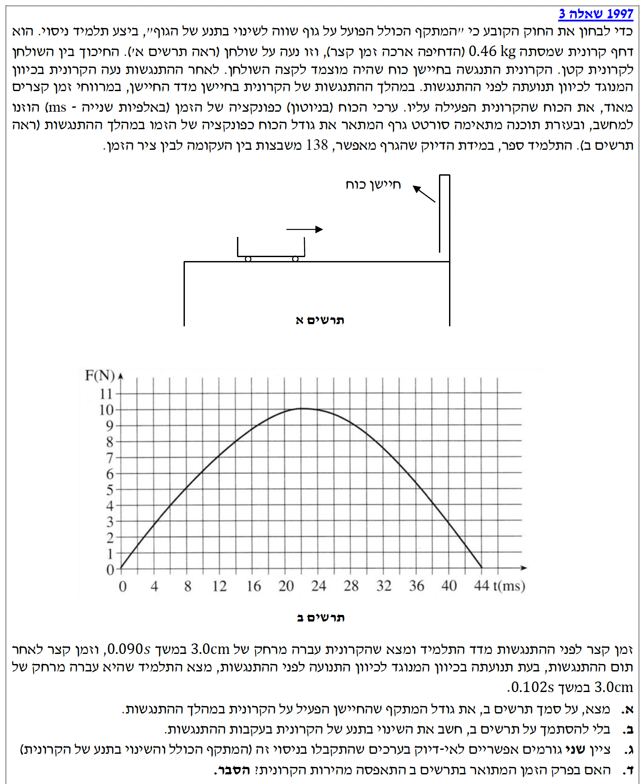

פתרון בגרות בפיזיקה - שאלה 3
מכניקה / 1997 / 5 יח"ל
פתרון מודרך וצעד-אחר-צעד, הכולל ניתוח קינמטי ומתקף-תנע.
עודכן:
--- --:--:--
מבט כללי על השאלה
בשאלה זו אנו מנתחים התנגשות אלסטית (או אלסטית חלקית) של קרונית בחיישן כוח המחובר לקיר. מצד אחד, החיישן מודד באופן רציף את הכוח המשתנה בזמן, ומאפשר לנו לחשב את המתקף ישירות כשטח הכלוא בגרף.
מצד שני, בעזרת נתונים קינמטיים של מיקום וזמן, נוכל לחשב את השינוי בתנע של הקרונית. על פי משפט מתקף-תנע, שני הגדלים הללו אמורים להיות זהים, והשאלה בוחנת את יכולתנו להשוות ביניהם ולהסביר פערים ניסויים אפשריים במציאות.

[תמונת השאלה המקורית]
לא נמצאה תמונה בשם question-image.png באותה תיקייה.
מה נתון: גרף של הכוח כפונקציה של הזמן. ציר הזמן הוא במילישניות, כשכל משבצת מייצגת \( 2 \text{ ms} \). ציר הכוח בקפיצות של \( 1 \text{ N} \). נבצע המרת יחידות: \( 2 \text{ ms} = 0.002 \text{ s} \). נתון בנוסף שישנן \( 138 \) משבצות כלואות בין העקומה לציר הזמן.
מה מחפשים: את גודל המתקף הכולל שהפעיל החיישן על הקרונית במהלך ההתנגשות.
נוסחאות מהדף:
\( \vec{J} = \int_{t_1}^{t_2} \vec{F}(t)dt \)
פתרון צעד-אחר-צעד:
שלב 1: חישוב שטח משבצת בודדת
לפי משפט מתקף-תנע עבור כוח משתנה, המתקף שווה לשטח הכלוא מתחת לגרף כוח-זמן. נחשב תחילה את השטח (והיחידות) של משבצת אחת בודדת בגרף:
\[ S_{\text{square}} = 1 \text{ N} \cdot 0.002 \text{ s} = 0.002 \text{ N}\cdot\text{s} \]
שלב 2: סך המתקף
כעת נכפול את שטח המשבצת הבודדת במספר המשבצות הכולל בגרף:
\[ J = 138 \cdot 0.002 = 0.276 \text{ N}\cdot\text{s} \]
גודל המתקף שהפעיל החיישן על הקרונית הוא \( 0.276 \text{ N}\cdot\text{s} \). כיוון המתקף הוא נגד כיוון תנועתה ההתחלתית.
הערת מורה:
שימו לב! כאשר מחשבים שטח מתוך גרף בפיזיקה, חובה להמיר את היחידות בצירים ליחידות התקניות (MKS). מילישנייה היא אלפית השנייה, ולכן כפלנו ב-0.002 ולא ב-2! המרה נכונה בשלב ה"מה נתון" מונעת טעות פאטלית של פקטור של 1000 בתוצאה.
מה נתון: מסת הקרונית היא \( m = 0.46 \text{ kg} \). זמן לתנועת הקרונית אל החיישן \( \Delta t_1 = 0.090 \text{ s} \) למרחק של \( \Delta x_1 = 0.030 \text{ m} \) (ביצענו המרה מ-cm למטרים). בחזרה מהחיישן הזמן הוא \( \Delta t_2 = 0.102 \text{ s} \) והמרחק הוא \( \Delta x_2 = -0.030 \text{ m} \) (ההעתק שלילי כי הכיוון התהפך).
מה מחפשים: את השינוי בתנע של הקרונית בעקבות ההתנגשות, על סמך נתוני הקינמטיקה בלבד וללא עזרת הגרף.
נוסחאות מהדף:
\( \overline{v} = \frac{\Delta x}{\Delta t} \)
\( \vec{p} = m\vec{v} \)
\( \Delta\vec{p} = \vec{p}_f - \vec{p}_i \)
חישוב:
שלב 1: חישוב מהירויות לפני ואחרי
כיוון שהנחנו שאין חיכוך משמעותי במסילה בזמן תנועתה החופשית, המהירויות לפני ההתנגשות ולאחריה נחשבות קבועות. נחשב את מהירות הקרונית אל עבר החיישן (נסמן כציר חיובי):
\[ v_1 = \frac{\Delta x_1}{\Delta t_1} = \frac{0.030}{0.090} = \frac{1}{3} \approx 0.333 \text{ m/s} \]
נחשב את המהירות לאחר ההתנגשות. כיוון התנועה התהפך, לכן ההעתק והמהירות שניהם שליליים:
\[ v_2 = \frac{\Delta x_2}{\Delta t_2} = \frac{-0.030}{0.102} = -\frac{30}{102} = -\frac{5}{17} \approx -0.294 \text{ m/s} \]
שלב 2: חישוב השינוי בתנע
כעת נציב את שתי המהירויות עם המסות אל תוך משוואת השינוי בתנע:
\[ \Delta p = m \cdot v_2 - m \cdot v_1 = m(v_2 - v_1) \]
\[ \Delta p = 0.46 \cdot \left( -0.294 - 0.333 \right) \]
\[ \Delta p = 0.46 \cdot (-0.627) \approx -0.288 \text{ kg}\cdot\text{m/s} \]
מסקנה: השינוי בתנע של הקרונית הוא \( -0.288 \text{ kg}\cdot\text{m/s} \). הסימן השלילי מציין שכיוון וקטור השינוי הוא שמאלה, הפוך לכיוון תנועתה המקורית.
הערת מורה:
תמיד הגדירו ציר מקום (ציר ייחוס) ובחרו כיוון חיובי בתחילת התרגיל! המהירות היא גודל וקטורי. פספוס המינוס במהירות שלאחר ההתנגשות יוביל בטעות לחיסור גדלי המהירויות (במקום חיבור הגדלים) ויקלקל את כל תוצאת השינוי בתנע.
מה נתון: מצאנו שני ערכים האמורים להיות שווים לחלוטין לפי משפט מתקף-תנע (\( J = \Delta p \)). המתקף חושב כ- \( 0.276 \text{ N}\cdot\text{s} \) בערכו המוחלט, ואילו גודל השינוי בתנע חושב כ- \( 0.288 \text{ kg}\cdot\text{m/s} \). ישנו פער מסוים בין התוצאות.
מה מחפשים: שני גורמים אפשריים לאי-הדיוק בניסוי (מדוע התוצאות לא יצאו שוות).
ניתוח מקורות שגיאה:
במציאות, הניסוי אינו מתרחש בסביבה אידיאלית. הנה שתי סיבות מרכזיות שיכולות להסביר את ההפרש:
-
קיומו של כוח חיכוך: בניסוי הניחו כי אין חיכוך בין הקרונית לשולחן ולכן חישבנו מהירות ממוצעת כקבועה. במציאות קיים כוח חיכוך שמקטין את מהירות הקרונית גם בהלוך וגם בחזור. כך שהשינוי הכולל בתנע שחישבנו מושפע גם ממתקף כוח החיכוך, ולא רק ממתקף החיישן שמדדנו בגרף.
-
הערכת שטח מתוך גרף: חישוב המתקף התבסס על ספירת משבצות תחת עקומה. קצות העקומה חותכים משבצות באמצען, ולכן ספירת 138 משבצות היא רק אומדן חזותי של הנסיין ואינה יכולה להיות מדויקת באופן מושלם.
מסקנה: 1. השפעת חיכוך במסילה (שאינו אפס). 2. שגיאת הערכה בספירת המשבצות בגרף.
הערת מורה:
בכל ניסוי בפיזיקה קיימים פערים בין התיאוריה (מודל אידיאלי) למציאות. שגיאות אלו מתחלקות לרוב לשגיאות שיטתיות (כמו חיכוך או התנגדות אוויר שלא נלקחו בחשבון) ולשגיאות קריאה אקראיות (קושי לדייק בעין בעת קריאת מכשיר או ספירת שטח גרף).
מה נתון: תנועת הקרונית הלוך (מהירות חיובית) וחזור (מהירות שלילית) בעקבות הפעלת כוח רציף על ידי החיישן.
מה מחפשים: האם בפרק זמן ההתנגשות (שתואר בגרף), גודל מהירות הקרונית התאפס לחלוטין ברגע מסוים?
פתרון:
במכניקה הקלאסית, תנועה של גוף בעל מסה משתנה באופן הדרגתי ורציף תחת השפעת כוחות (שאינם אינסופיים). הקרונית אינה יכולה לקפוץ בבת אחת מתנועה בכיוון אחד לתנועה בכיוון ההפוך.
מכיוון שהקרונית נעה תחילה בכיוון אחד (\( v > 0 \)) וסיימה את ההתנגשות בתנועה בכיוון ההפוך (\( v < 0 \)), היא הייתה חייבת לעבור דרך מצב מנוחה. במילים אחרות, כדי להחליף כיוון תנועה בקו ישר, גודל מהירותה של הקרונית הלך וקטן עד לעצירה רגעית מוחלטת (\( v=0 \)), ורק אז היא החלה לצבור מהירות בכיוון הנגדי. נקודת העצירה מייצגת את הרגע שבו הקרונית נדחסה למקסימום כלפי החיישן.
מסקנה: כן, המהירות התאפסה בהכרח. כדי להחליף כיוון תנועה ממהירות חיובית למהירות שלילית, גוף חייב לעבור דרך מצב של עצירה רגעית (\( v=0 \)).
הערת מורה:
חשבו על זריקת כדור באוויר כלפי מעלה. הכדור עולה, גודל מהירותו קטן, ובשיא הגובה הוא נעצר בדיוק לרגע אחד לפני שהוא מתחיל לרדת. הכלל הזה נכון תמיד: כל גוף בעל מסה שמחליף כיוון בתנועה חד-ממדית, חייב לעבור דרך עצירה רגעית (\( v=0 \)). אין "קפיצות" במציאות הפיזיקלית!